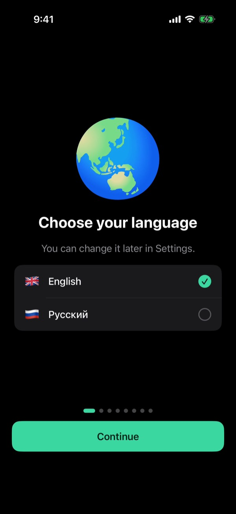
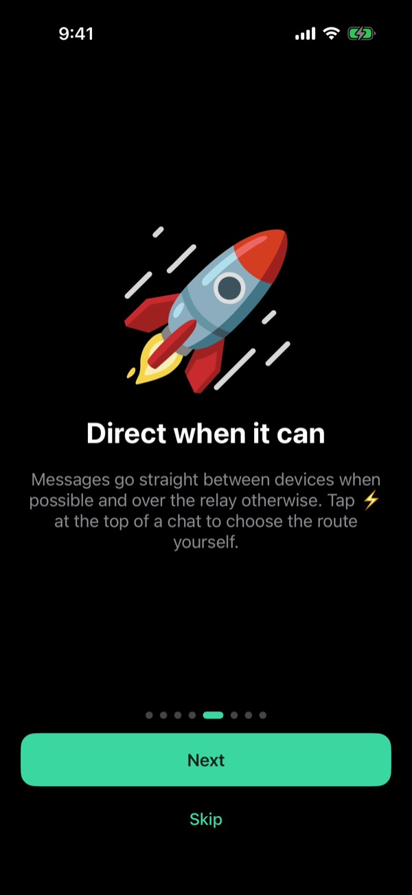
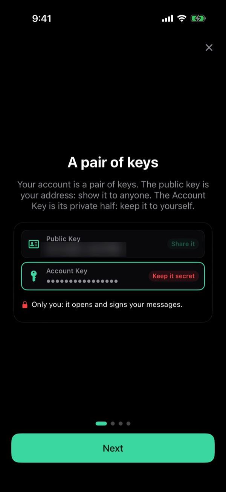

Viper 1.5.31
Viper in Russian, a new start and Guides
Updated for Viper 1.5.34 (November 19, 2026)
What changed since this post. Where the post and the app differ, the app is right.
- Files from non-contacts are rejected, as this note says (Settings → Privacy, under Messages from Non-Contacts).
- Guides are in Profile → Settings → Help → Guides; there are 30 now, and each is also a post on this blog.



- Viper now speaks Russian. Pick English or Russian on the first screen.
- A new welcome: a short tour of what Viper can do, ending with a chat to @support. Replay it any time from Settings.
- Guides: step-by-step how-tos for routes, Bluetooth, contacts, accounts, settings and AI. Find them in Profile, Settings, Guides.
- Settings are grouped into clear sections, each with its own screen. Your keys now live under Security and Data.
Accounts and chats
- Exit several accounts at once: Select in Accounts, tick them, Exit. Viper switches to an account you kept.
- @usernames and viper:// links in messages are tappable and open that person's chat.
- Files are accepted only from your contacts.
AI
- Answer length Auto is the new default: short questions get short answers, and every answer ends on a full sentence.
- Model download is one button on any network, and a stalled download picks up where it stopped.
- The small models no longer repeat an earlier answer.
Faster and steadier
- Messages arrive right away when you open Viper after it slept, instead of after about 10 seconds.
- Viper reconnects by itself after a network outage.
- Files go over a direct link again when one is up.
- Voice notes and video circles play one after another again.
Text: the App Store “What's New” for Viper 1.5.31, released October 22, 2026. Screenshots: Viper 1.5.34 with sample data. All release notes